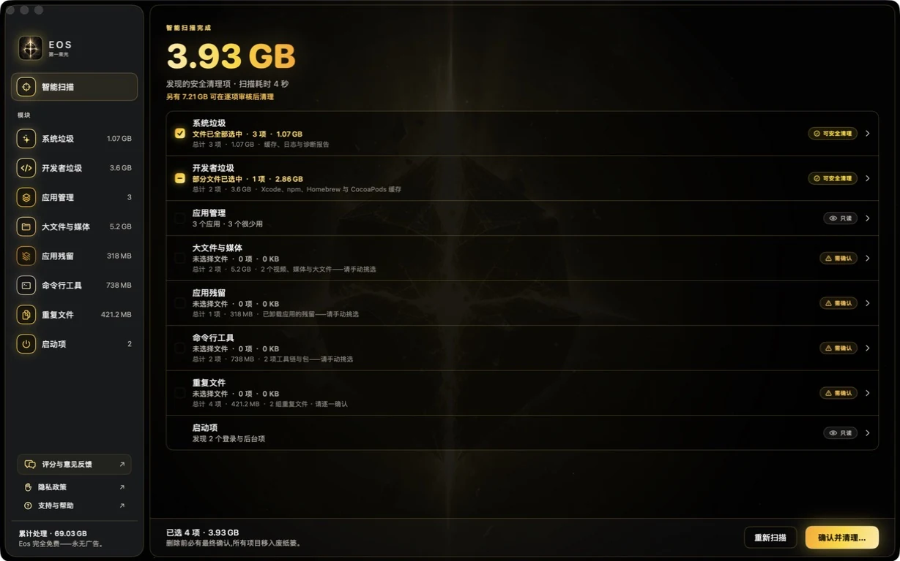
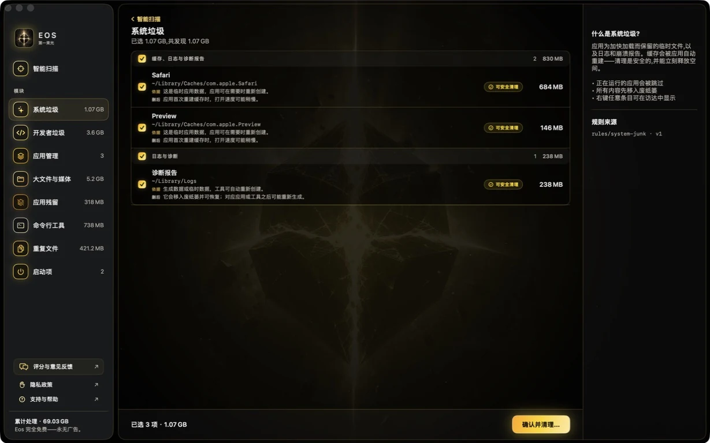

Xcode 与开发缓存
查找 Xcode Derived Data、模拟器缓存、旧设备支持文件，以及 Homebrew、npm 和 CocoaPods 等工具的缓存。
Mac · macOS 14 或更高版本
查找 Xcode 缓存、大文件、完全重复的文件和应用残留。Eos 会说明每项结果是什么，再由你决定是否清理。
免费 · 无广告和订阅 · 扫描在 Mac 上完成

扫描后打开任意类别，先确认文件用途和清理影响，再决定要清哪些。
查找 Xcode Derived Data、模拟器缓存、旧设备支持文件，以及 Homebrew、npm 和 CocoaPods 等工具的缓存。
按大小查看视频、音频和其他文件。Eos 按内容识别完全相同的文件，由你决定保留哪个副本。
查看很少使用的 App、相关残留、日志和用户缓存，也可以检查受支持的命令行工具和启动项。
点开扫描结果，查看可清理的原因以及清理后的影响。有些缓存会由应用重新生成，有些依赖文件下次使用时需要重新下载。

可以查找 Derived Data、模拟器缓存和旧设备支持文件。建议先查看每项说明，确认后续构建或连接设备是否还需要它。
Eos 会用内容哈希核对文件，找出完全相同的副本。你可以查看各副本所在位置，再决定保留哪一个。
由你选择并确认清理项目。默认将清理的文件移入废纸篓。
扫描和清理都在 Mac 上运行。Eos 无需账号，也不使用开发者服务器或分析服务。